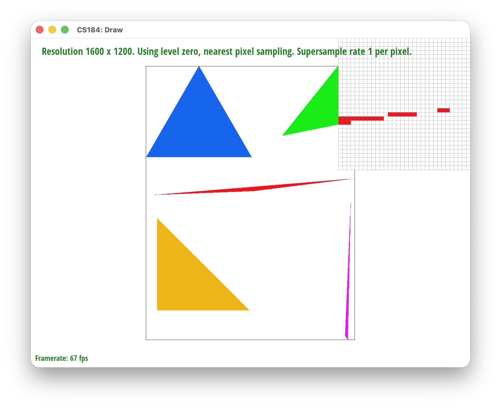
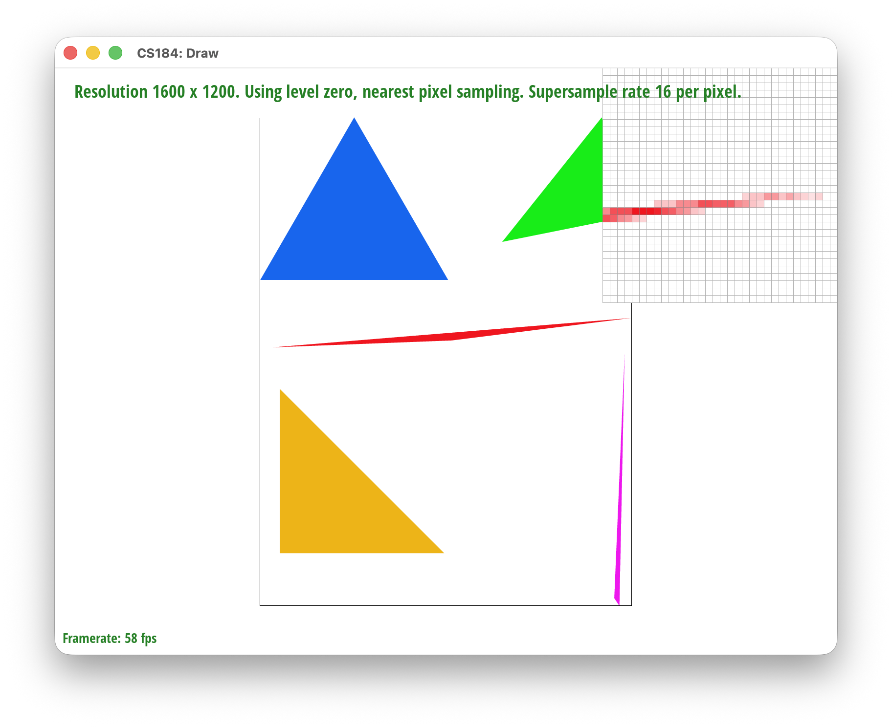
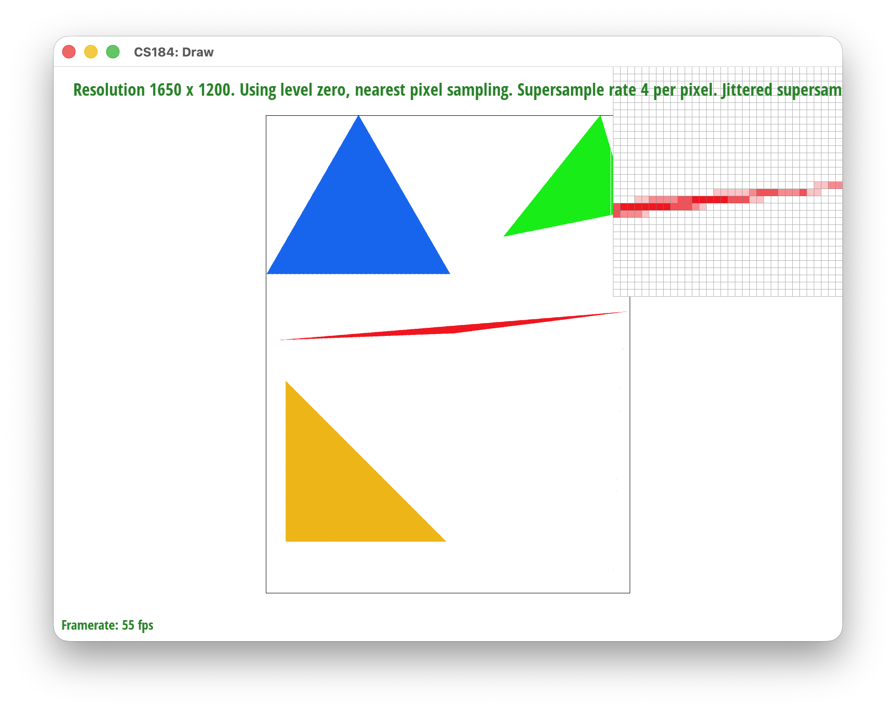
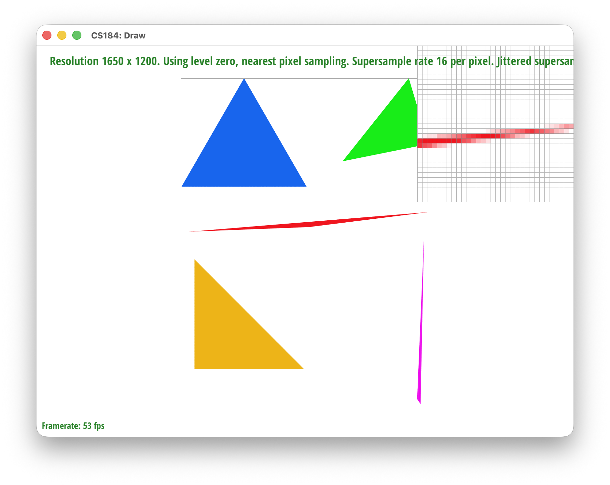
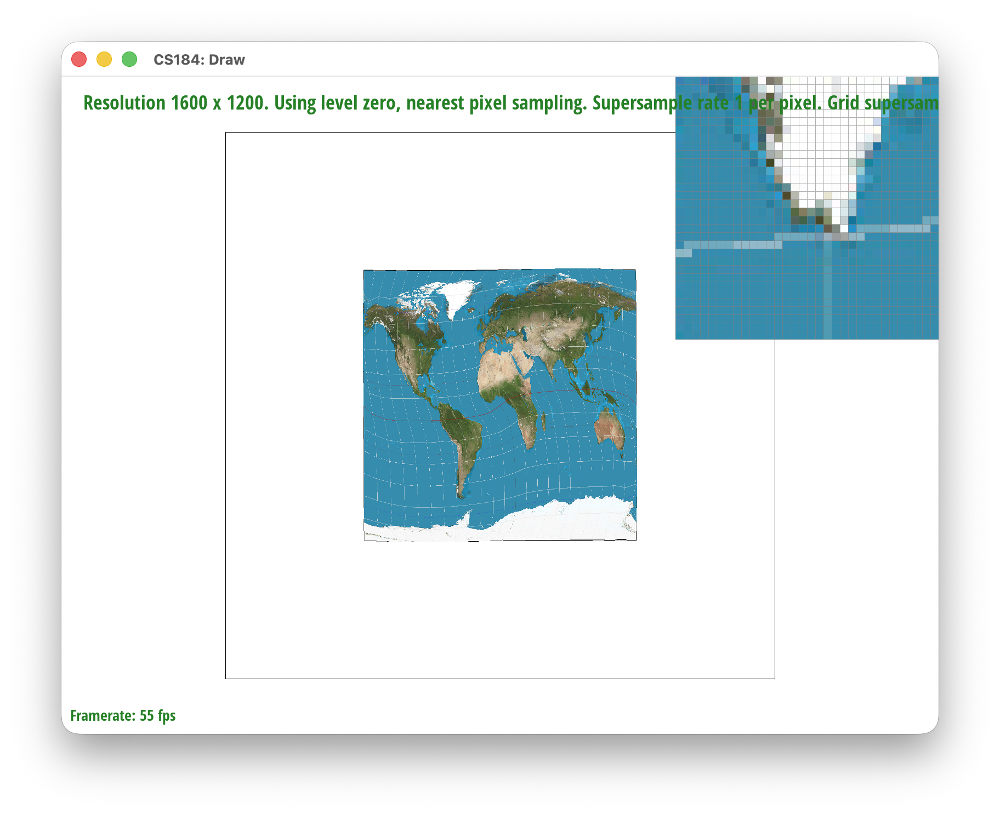
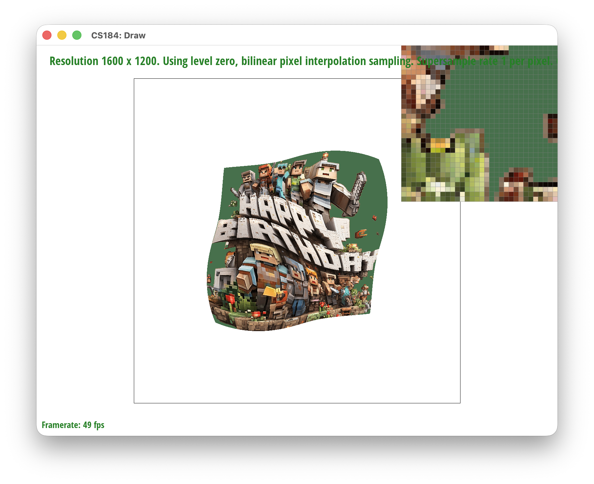

Rasterization
CS184/284A · Homework 1 · Spring 2026
Muhammad Talha Ijaz
Overview
In this homework, I implemented a complete rasterization pipeline from scratch, building the fundamental algorithms that transform vector graphics into pixel-based images. The homework covers the entire process from basic triangle rasterization to advanced texture mapping techniques.
The implementation includes:
- Triangle Rasterization: Developed an efficient algorithm using bounding boxes and edge functions to determine which pixels lie inside a triangle, with optimizations for early exit and incremental computation.
- Supersampling Antialiasing: Implemented a supersampling pipeline that takes multiple samples per pixel to smooth jagged edges, including both regular grid and jittered sampling patterns.
- Geometric Transforms: Built a transformation system using homogeneous coordinates to translate, rotate, and scale vector graphics, creating hierarchical models with multiple articulated parts.
- Barycentric Interpolation: Used barycentric coordinates to smoothly interpolate colors and texture coordinates across triangle surfaces, enabling gradient fills and texture mapping.
- Texture Mapping: Implemented pixel sampling methods (nearest-neighbor and bilinear filtering) to map 2D textures onto 3D geometry with proper filtering.
- Mipmapping: Developed level-of-detail texture sampling using mipmaps to reduce aliasing when textures are minified, including trilinear filtering and anisotropic filtering for oblique viewing angles.
Through this homework, I gained deep insights into how modern graphics pipelines work at a fundamental level. The most interesting aspects were understanding the tradeoffs between quality and performance (supersampling vs. speed), and seeing how mathematical concepts like barycentric coordinates and linear algebra directly translate into practical rendering techniques. Implementing mipmaps was particularly enlightening—it showed how precomputation and clever data structures can dramatically improve both visual quality and performance.
Task 1: Drawing Single-Color Triangles
How we rasterize triangles
We compute the bounding box of the triangle (min/max of the vertices' \(x\) and \(y\)), clamp it to the screen, then for each pixel in that box test whether the pixel center \((x+0.5, y+0.5)\) lies inside the triangle. We use the three-line edge function from lecture: for each edge from \(A\) to \(B\), \(L = (B.x - A.x)(P.y - A.y) - (B.y - A.y)(P.x - A.x)\), with \(P\) the pixel center. The point is inside if all three \(L\) values have the same sign. We treat both all-positive and all-negative as inside to support CW and CCW winding, and use \(\geq\)/\(\leq\) so samples on edges are drawn. When the center is inside, we call fill_pixel(x, y, color).
Bounding box efficiency
We only iterate over pixels in the bounding box, so we never test pixels clearly outside the triangle. The cost is one point-in-triangle test per pixel in the box, and we never touch pixels outside it.
Picture 1.1

Extra credit: Optimizations
Beyond the basic bounding box, I added two optimizations and timed them with clock() around svg.draw() in DrawRend::redraw(), on illustration/05_lion.svg at 2000×2000 in headless mode (best of 3 runs).
| Version | Time (ms) | Speedup | Description |
|---|---|---|---|
| Baseline | ~4.3 ms | 1.0x | Bounding box with per-pixel edge function evaluation. |
| + Incremental edge functions | ~4.3 ms | ~1.0x | Precompute edge coefficients and step edge values by constants when moving between pixels (compiler likely did similar). |
| + Early exit on convex break | ~3.1 ms | ~1.4x | Once we leave the triangle while scanning down a column, we break; skips ~50% of empty bbox pixels for typical triangles. |
The Big Picture
Imagine a triangle on graph paper: you only need to decide which squares to color.
Step 1: Don't check the whole page. Only the tightest axis-aligned rectangle around the triangle (the bounding box) can contain covered pixels, so we only consider squares inside it.
Step 2: Check each square's center. For each square in the box we ask: is its center \((x+0.5, y+0.5)\) inside the triangle? The center is the single sample that represents the pixel.
Step 3: The three-line test. Each edge splits the plane in two. A point is inside only if it's on the same side of all three edges (like being inside a room: interior side of every wall). The edge function gives a sign per edge; same sign for all three → inside (sign depends on CW/CCW); mixed signs → outside.
The optimization trick. The edge function is linear in position, so moving one pixel changes it by a constant. We compute it once per row/column and update by addition instead of recomputing. Because the triangle is convex, once we leave it along a column we don't re-enter, so we break early and skip the rest of that column.
In short: bounding box, center test, three-line check, plus incremental edge updates and early exit for speed.
Task 2: Antialiasing by Supersampling
How we do supersampling
We treat each pixel as a small grid of sample points. The sample rate \(n\) (1, 4, 9, or 16) gives a \(\sqrt{n} \times \sqrt{n}\) grid per pixel. We rasterize at this higher effective resolution into a sample buffer, then downsample to the screen by averaging the samples in each pixel.
Sample buffer: One 1D vector of Color with width * height * sample_rate entries. For pixel \((x, y)\), the samples live at indices \((y \cdot \text{width} + x) \cdot \text{sample_rate} + s\) for \(s = 0, \ldots, \text{sample_rate} - 1\). Subsample index \(s\) maps to grid cell \((i, j)\) with \(i = s \bmod \sqrt{n}\), \(j = s / \sqrt{n}\). Sample positions use the center of each sub-cell: \(\text{sample}_x = x + (i + 0.5) / \sqrt{n}\), \(\text{sample}_y = y + (j + 0.5) / \sqrt{n}\).
Triangle rasterization: For each pixel in the triangle's bounding box we loop over all subsamples. For each subsample we run the same three-line edge function as in Task 1 at that sample's \((x, y)\). If the sample is inside the triangle we write the triangle color to that sample's slot in the buffer. Points and lines are not supersampled: fill_pixel fills all subsamples of the pixel with the same color so they still show up after resolve.
Resolve: After all primitives are drawn, resolve_to_framebuffer runs. For each pixel it averages the R, G, and B of all sample_rate samples and writes the result to the final framebuffer (with clamping to \([0, 255]\)).
Why supersampling helps
With one sample per pixel at the center, coverage is binary (inside or outside), so edges look jagged (aliasing). With multiple samples per pixel, edge pixels get a mix of triangle and background; averaging gives fractional coverage and smoother edges without checking more pixels than we already do in the bounding box.
Pipeline changes
set_sample_rateandset_framebuffer_targetresize the sample buffer towidth * height * sample_rate.fill_pixel(x, y, c)writes \(c\) to allsample_rateentries for pixel \((x, y)\) so points and lines still draw correctly.rasterize_triangletests each subsample with the edge functions and only fills the samples that are inside the triangle.resolve_to_framebufferno longer reads a single sample per pixel; it averages all subsamples for that pixel and writes the result.
Screenshots: sample rates 1, 4, and 16
basic/test4.svg with default view; pixel inspector over an edge to show the effect of supersampling.
|

|
|

|
Why these results: At rate 1, one sample per pixel gives binary coverage and stair-stepped edges. At 4 and 16, edge pixels contain both inside and outside samples; averaging gives in-between shades, so edges look smoother. Higher sample rate improves smoothness at the cost of more memory and work per pixel.
The Big Picture
Think of drawing the scene on a finer grid (e.g. 4× or 16× more cells per pixel), then averaging each block of cells down to one pixel. That "higher-res then average" is supersampling: we only do the point-in-triangle test at those finer positions and then blend the results. We still only touch pixels in the triangle's bounding box; we just take several samples per pixel and combine them so edges are antialiased instead of jagged.
Extra credit: Jittered supersampling
I implemented jittered supersampling as an alternative to the default grid supersampling. Toggle between them with the J key; the status line shows "Grid supersampling." or "Jittered supersampling." so you know which mode is active when saving screenshots.
How jittered sampling works: In grid supersampling, the \(n\) samples per pixel sit on a fixed \(\sqrt{n}\times\sqrt{n}\) grid (e.g. sub-cell centers \((i+0.5, j+0.5)\) in normalized coordinates). In jittered sampling, each sample is offset by a small amount within its sub-cell so the pattern is no longer a regular grid. Concretely, for pixel \((x,y)\) and subsample index \(s\) (sub-cell \((i,j)\)), we use \(\text{sample}_x = x + (i + 0.5 + \text{jitter}_x)/\sqrt{n}\) (and similarly for \(y\)), where \(\text{jitter}_x, \text{jitter}_y \in [-0.5, 0.5]\) come from a deterministic hash of \((x, y, s)\) (e.g. \(\sin(x\cdot 127.1 + y\cdot 311.7 + s\cdot 74.7)\) mapped to \([-0.5, 0.5]\)). That keeps the same scene rendering the same every time. The rest of the pipeline is unchanged: point-in-triangle at each sample, write to the sample buffer, resolve by averaging.
Why jittered can look better: A regular grid aligns samples across pixels, which can reinforce certain aliasing (e.g. stair-stepping or Moiré). Jittering breaks that alignment so the same edge hits different relative positions in different pixels; after averaging, edges often look smoother and thin features can show fewer artifacts than with grid at the same sample count.
Comparison: Below are three screenshots with Jittered supersampling at sample rates 1, 4, and 16 (same scene as above). At rate 1, jittered still shows strong aliasing (one sample per pixel). At 4 and 16, the pixel inspector shows smoother gradients along edges and the thin red line; for a direct grid-vs-jittered comparison, render the same view with Grid and Jittered at the same rate (e.g. 4 or 16) and place the two side by side. All screenshots were taken with the S key.

|

|

|
Task 3: Transforms
Custom cubeman: my_robot.svg
I created an updated cubeman in docs/my_robot.svg that uses the translate, scale, and rotate transforms from transforms.cpp to pose the robot in a ballet-style pose: arms raised and curved above the head, legs spread with a slight bend at the knees.
What I was trying to do
Pose: A ballet-inspired position: both arms are raised and curved so the forearms come together above the diamond head (like a frame or crown), and both legs are spread with a gentle bend at the knees and feet closer together than the hips, giving a symmetric, dance-like stance.
Hierarchy: Each limb uses an upper and lower segment (thigh/upper arm and calf/forearm), with the lower segment positioned and rotated relative to the upper so the arms read as "raised and curved" and the legs as "spread with bent knees."
Transforms used
- Torso: Centered with
translate(250 250); no rotation or scale. - Head:
translate(0 -100)to sit above the torso, thenrotate(45)andscale(0.5 0.5)for the diamond. - Left leg:
translate(-35 85)for the hip; whole legrotate(-5). Upper legscale(0.2 0.6); lower legrotate(-15)andtranslate(-10 65)(in the leg's local frame) then the same scale so the knee bends outward and the foot moves inward. - Right leg: Mirror of the left:
translate(35 85),rotate(5), and for the lower legrotate(15)andtranslate(10 65). - Left arm:
translate(-70 -80)at the shoulder; upper armrotate(65)andscale(0.6 0.2); forearmtranslate(10 -65)androtate(135)(same scale) so the arm goes up and the forearm curves in above the head. - Right arm: Mirror:
translate(70 -80),rotate(-65)on the upper arm, forearmtranslate(-10 -65)androtate(-135)so both arms frame the head.
All limb geometry uses the same two triangles, with only translate, scale, and rotate in the SVG transform attributes, matching the 3×3 homogeneous transforms in transforms.cpp. The screenshot was generated with the S hotkey in the assignment GUI.
Screenshot
Extra credit: Viewport rotation
I added viewport rotation with two keys: [ rotates the view left by 10° and ] rotates it right by 10°. The current angle is shown in the status line (e.g. "View rotation 45 deg ([ ] keys)."). Pressing Space resets the view (including rotation).
Matrix stack: The pipeline is SVG → NDC → screen. I left svg_to_ndc (centering and span) and ndc_to_screen (scale and offset to the window) unchanged. I inserted a rotation in NDC around the view center (0.5, 0.5): R_ndc = translate(0.5, 0.5) * rotate(view_angle) * translate(-0.5, -0.5). The full transform used for drawing is svg_to_screen = ndc_to_screen * R_ndc * svg_to_ndc[current_svg]. So the stack is still SVG→NDC then NDC→screen; the only addition is the rotation in the middle. Rotating in NDC keeps the content spinning around the center of the viewport. The canvas outline (black square) is drawn with the same transform, so it rotates with the content.
Task 4: Barycentric coordinates
What are barycentric coordinates?
For a triangle with vertices \(P_0\), \(P_1\), \(P_2\), the barycentric coordinates of a point \(P\) are three weights \((\alpha, \beta, \gamma)\) such that \(P = \alpha P_0 + \beta P_1 + \gamma P_2\) with \(\alpha + \beta + \gamma = 1\). So \(P\) is a weighted average of the three vertices: \(\alpha\) is "how much of \(P_0\)", \(\beta\) "how much of \(P_1\)", \(\gamma\) "how much of \(P_2\)". \(P\) is inside the triangle (including edges) exactly when \(\alpha, \beta, \gamma \ge 0\). On an edge one weight is 0; at a vertex one weight is 1 and the others 0.
We can get \((\alpha, \beta, \gamma)\) from signed areas: if \(A\) is the triangle's area, then \(\alpha = \text{area}(P, P_1, P_2) / A\), \(\beta = \text{area}(P_0, P, P_2) / A\), \(\gamma = \text{area}(P_0, P_1, P) / A\). The same edge functions we use for point-in-triangle tests (e.g. \(L_0, L_1, L_2\)) are proportional to these areas, so we compute \(\alpha = L_1 / (2A)\), \(\beta = L_2 / (2A)\), \(\gamma = L_0 / (2A)\) with \(2A = (x_1 - x_0)(y_2 - y_0) - (y_1 - y_0)(x_2 - x_0)\). That gives us barycentrics at each sample at no extra cost.
Using them to interpolate color
If the vertices have colors \(c_0, c_1, c_2\), we assign the pixel the interpolated color \(c = \alpha c_0 + \beta c_1 + \gamma c_2\). So color changes smoothly across the triangle: e.g. red at one vertex, green at another, blue at the third will blend through yellow, cyan, magenta, etc., in between. A single triangle with one red, one green, and one blue vertex (and the rest of the scene white) is a good image to illustrate barycentric interpolation.
Implementation
We reuse the same pipeline as the single-color triangle: bounding box, edge functions \(L_0, L_1, L_2\) per sample, and the same inside test. For each sample inside the triangle we compute \(\alpha, \beta, \gamma\) as above, then set the sample color to \(\alpha c_0 + \beta c_1 + \gamma c_2\). Degenerate triangles (\(2A = 0\)) are skipped.
Screenshot
Task 5: "Pixel sampling" for texture mapping
What is pixel sampling?
We have a texture (a 2D image) and a sample point in texture space given by (u, v) in \([0,1]\). Pixel sampling is the process of turning that (u, v) into an RGB color by looking up the texture's texels. The "pixel sampling method" is how we do that lookup.
Two methods
Nearest-neighbor (P_NEAREST): Map (u, v) to texel coordinates and round (or floor) to the nearest integer texel; return that single texel's color. No blending, so the sample is always exactly one texel. Fast but can look blocky when the texture is magnified or when (u, v) doesn't align with texel centers.
Bilinear (P_LINEAR): Map (u, v) to continuous texel space (e.g. \(u\cdot\text{width}-0.5\), \(v\cdot\text{height}-0.5\) so sampling is consistent with texel centers). Take the four texels that surround that point and interpolate: first horizontally between the two bottom texels and the two top texels using the fractional part in \(u\), then vertically using the fractional part in \(v\) (or equivalently a weighted average of the four texels). This produces a smooth blend between neighboring texels and reduces blockiness when the texture is zoomed or viewed at an angle.
Implementation
Texture::sample_nearest(uv, level): Convert uv to texel indices with \(\lfloor u\cdot\text{width}\rfloor\) and \(\lfloor v\cdot\text{height}\rfloor\), clamp to texture bounds, return get_texel(tx, ty).
Texture::sample_bilinear(uv, level): Map uv to continuous texel coordinates; identify the four surrounding texels, clamp their coordinates to the texture; bilinearly interpolate their colors using the fractional parts.
RasterizerImp::rasterize_textured_triangle: Same pipeline as the interpolated-color triangle (bounding box, edge tests, supersampling). For each sample inside the triangle we compute barycentric \((\alpha, \beta, \gamma)\), interpolate \(u = \alpha u_0 + \beta u_1 + \gamma u_2\) and \(v = \alpha v_0 + \beta v_1 + \gamma v_2\), then sample the texture at level 0 using the current PixelSampleMethod (P key): sample_nearest or sample_bilinear.
Four-way comparison (svg/texmap)
All four screenshots use the same textured scene (e.g. world map from svg/texmap/), with the pixel inspector over a region where the difference is clear (e.g. coastlines or grid lines). Screenshots taken with the S key.
|

|
|
|
|
|
When do the two methods differ a lot? When the texture is magnified (one texel covers many screen pixels) or when (u, v) varies smoothly across texel boundaries, nearest gives visible blocks and jagged transitions while bilinear gives gradual blends. At diagonal or curved boundaries in the texture (e.g. coastlines, grid lines), nearest keeps hard steps; bilinear softens them. When the texture is minified or viewed from far away, both can look similar; supersampling (rate 16) mainly improves geometric edges; it doesn't change the texture's look, so the blockiness of nearest vs the smoothness of bilinear is visible at both rates.
Task 6: "Level Sampling" with mipmaps for texture mapping
What is level sampling?
When a texture is minified—many texels map to one screen pixel—sampling only from the full-resolution level causes aliasing: high-frequency detail in the texture gets folded into wrong frequencies and we see moiré, shimmer, or noisy pixels. Level sampling (with mipmaps) addresses this by precomputing a pyramid of downsampled texture levels (level 0 = full res, level 1 = half, etc.). For each pixel we estimate which mip level best matches the texel footprint (how much of the texture one pixel "sees"), then sample from that level (or blend between two levels). That way we average many texels in a single lookup instead of point-sampling the full-res texture, which reduces minification aliasing.
Implementation
Barycentric differentials (rasterizer): In rasterize_textured_triangle, for each sample we have barycentric \((\alpha, \beta, \gamma)\) and interpolated \((u, v)\). The derivatives of \(\alpha, \beta, \gamma\) with respect to screen \(x\) and \(y\) come from the edge vectors and triangle area (e.g. \(\partial\alpha/\partial x = -\mathrm{dy}_1/\mathrm{area2}\)). We compute \(\partial u/\partial x\), \(\partial v/\partial x\), \(\partial u/\partial y\), \(\partial v/\partial y\) from those and the vertex UVs, then set SampleParams: p_uv at the sample, p_dx_uv = uv at \((x+1,y)\), p_dy_uv = uv at \((x,y+1)\), plus psm and lsm. We call tex.sample(sp) instead of sampling at level 0 directly.
Texture::get_level(sp): From p_dx_uv - p_uv and p_dy_uv - p_uv we get the rate of change of uv per pixel. Scaling by texture width/height gives the footprint in texel space. We take the length of each footprint vector and set \(L = \max(\text{length}_x, \text{length}_y)\). The continuous mip level is \(D = \log_2(L)\), clamped to \([0, \text{numLevels}-1]\). If \(L \le 1\) we use level 0.
Texture::sample(sp): We compute level = get_level(sp). For L_ZERO we always sample level 0 with the current pixel sampling method (nearest or bilinear). For L_NEAREST we round level to an integer, clamp it, and sample that mip level. For L_LINEAR we sample at \(\lfloor \text{level} \rfloor\) and \(\lceil \text{level} \rceil\) and blend the two colors by the fractional part of level (trilinear interpolation).
Tradeoffs: speed, memory, antialiasing
Pixel sampling (P_NEAREST vs P_LINEAR): Nearest is faster (one texel lookup) and uses no extra memory; bilinear does four lookups and interpolation, so slightly more cost. Bilinear gives smoother texture when magnified and softer edges; nearest looks blocky. For minification, pixel sampling alone doesn't fix aliasing—level sampling is what matters.
Level sampling (L_ZERO vs L_NEAREST vs L_LINEAR): L_ZERO is fastest (always level 0) but aliases badly when minified. L_NEAREST uses the mip pyramid (one level per pixel) and reduces aliasing; L_LINEAR adds trilinear blending between levels for smoother transitions. L_LINEAR is a bit more expensive (two level samples, then blend) but gives the best antialiasing for textures at a distance.
Samples per pixel (1 vs 4 vs 16): More samples per pixel improve geometric antialiasing (triangle edges, not texture minification). Cost grows linearly with sample rate (memory and shading); quality improves with diminishing returns. Level sampling addresses texture aliasing; supersampling addresses edge aliasing.
Extra credit: Anisotropic filtering
I implemented anisotropic filtering as an extra level-sampling mode (L key cycles to "anisotropic"). Standard mipmapping assumes a roughly square texel footprint; when the footprint is elongated (e.g. a floor or a surface viewed at a steep angle), isotropic filtering picks a level by the max of the two axes and blurs too much along the short axis, losing detail. Anisotropic filtering takes multiple samples along the major axis of the footprint and averages them, so we keep sharpness along the short axis while still averaging along the long axis.
Implementation: In Texture::sample() when lsm == L_ANISO, I compute the footprint lengths \(L_x\) and \(L_y\) in texel space (same as in get_level). The anisotropy ratio is \(r = L_{\max} / L_{\min}\) (capped at 8). I take \(n = \lceil r \rceil\) samples along the longer of the two footprint directions in UV space, centered at p_uv, each sample with trilinear filtering at level \(\log_2(L_{\max})\), then average the \(n\) colors. UV offsets are clamped to \([0,1]\) so we stay on the texture.
Comparison with other methods: Anisotropic uses the mip pyramid and multiple samples, removing minification aliasing and reducing blur on angled surfaces (vs L_ZERO/nearest). It chooses the right blur and direction so angled regions look sharper than bilinear alone. Vs trilinear (L_LINEAR), which treats the footprint as isotropic, anisotropic preserves more detail along the "narrow" direction on oblique views; trilinear tends to blur uniformly.
Full comparison: all level × pixel combinations with timings
I used a custom PNG (Happy Birthday–style texture) and svg/texmap/task_6.svg. All screenshots use the same scene with the pixel inspector; taken with the S key. Relative performance was measured with clock() around svg.draw() (one redraw per combination). Same resolution and supersample rate for all.
| Level sampling | P_NEAREST (nearest pixel) | P_LINEAR (bilinear pixel) |
|---|---|---|
| L_ZERO level 0 only |
Time: 8.62 ms |

Time: 11.92 ms |
| L_NEAREST nearest mip level |
Time: 5.73 ms |
Time: 9.37 ms |
| L_LINEAR trilinear |
Time: 6.89 ms |
Time: 17.69 ms |
| L_ANISO anisotropic (EC) |
Time: 11.85 ms |
Time: 24.24 ms |
Performance summary: Fastest is L_NEAREST + P_NEAREST (5.73 ms). L_ZERO is simple but aliases. Adding bilinear pixel (P_LINEAR) costs roughly 2–4 ms per combination. Trilinear (L_LINEAR) adds level blending: P_NEAREST 6.89 ms, P_LINEAR 17.69 ms. Anisotropic (L_ANISO) does up to 8 trilinear samples per pixel on elongated footprints: 11.85 ms with P_NEAREST and 24.24 ms with P_LINEAR—the slowest but best quality on angled surfaces. So anisotropic is about 1.4× the cost of trilinear when both use P_LINEAR.